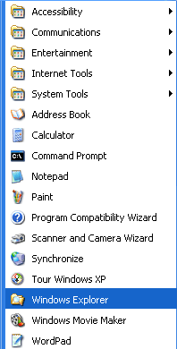
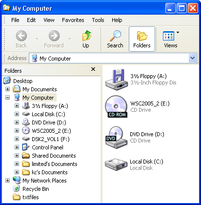
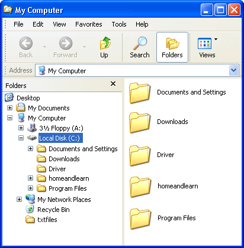
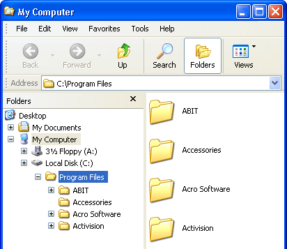

Free
computer Tutorials
|
Free
computer Tutorials
|
|
 home home |
Stay at Home and Learn | ||||
Windows XP Tutorials: The Windows Explorer
In this lesson, we'll create a new folder on the hard drive, but we'll use a tool called the Windows Explorer to do it. To bring up the Windows Explorer, do the following:
 The Windows Explorer is a great tool for finding your way around your hard drive. You can quickly locate files and folders, or browse for something in particular. Another quick way to bring up the Windows explorer is to do the following:
 If your screen is not split in two like the one above, do this:
The left hand side of the Windows Explorer screen shows different areas of your computer. In the previous image, the left part of Windows Explorer starts with Desktop. Next we have My Documents, My Computer, 3 ½ floppy, the C drive, the CD Rom Drive, Control Panel and so on right down to Recycle bin as the last option.
Click on the first option, Desktop, once with your Left mouse button. This will show you all the shortcuts you have on your Desktop, including the "My Documents" shortcut we placed there earlier. But the list of shortcuts will appear on the right hand side. And that is the main idea behind the Windows Explorer - Clicking something on the left hand side will bring up a list on the right hand side. Click on the letter C in the left hand side of your Windows Explorer. A list of all the files and folders on your hard drive will appear on the right hand side. Like the one below, but with different folder names on your computer.  When we create a new folder, it will appear on the right hand side. But because we clicked the letter C on the left hand side, the new folder will be created in the root folder of the C drive. The Root folder? What's that when it's at home? Well, the rectangular yellow icons on the right hand side are all folders. You can put one folder inside another. All of those folders on the right hand side, and all the single files, are inside the C Folder. The main folder on a hard drive is known as the Root Folder. This is the symbolic notation for the Root Folder on the C Drive C:\ You can see that notation in the Windows Explorer address bar. (If you can't see an address bar, on the menu bar across the top that has File, Edit, View, Go, click the View option. On the menu that drops down, move your mouse pointer to Toolbars. From the sub menu that pops up, Click the words "Address bar" once with your left mouse button.) The Windows Explorer address bar looks like this: Notice how the address bar says C:\. This is the root folder of your C Drive, the folder in which all of your other files and folders are placed. Watch what happens when the folder on the right hand side called "Program Files" is double clicked with the left hand mouse button. We get this:  The address bar now says C:\Program Files. This means that there is a folder called Program Files, and this folder is on the C Drive. On the right hand side is a list of all the folders and files in the "Program Files" folder. Now that you know how the Windows Explorer works, we'll now create our new folder.
<--Back One Page Move on to the Next Part--> <--Back to the Beginner's Computing Contents Page View all our Home Study Computer Courses
|
|||||
|